프로젝트 개요
한 의회에서 시작된 정책 논의가 다른 의회로 어떻게 번지는지를 데이터로 확인
왜 만들었나: 회의록 속에 묻힌 정책 흐름
전세사기 피해 지원, 저출생 대응, 집중호우 침수 대책처럼 한 지역에서 논의된 정책은 다른 지역 의회로 이어지는 경우가 많습니다. 하지만 의회마다 회의록 형식(HTML)과 정책 이름이 달라서, 단순 키워드 검색만으로는 어디서 먼저 논의됐고 어떤 순서로 퍼졌는지 알기 어려웠습니다.
- 지역별 핵심 정책 이슈와 키워드 찾기
- 제공 데이터 안에서 이슈가 처음 나타난 시점과 다른 의회의 후속 논의 흐름 추적
- 근거와 함께 앞으로의 확산 가능성 · 다음 달 언급량 예측
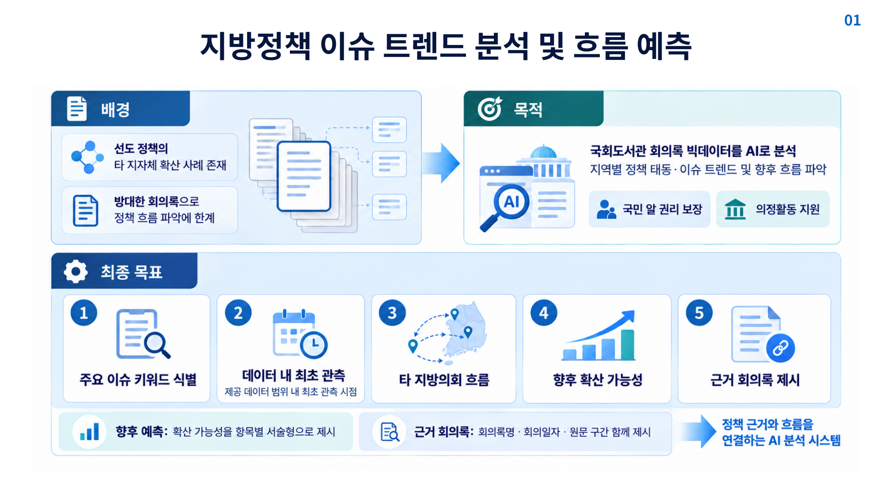
▲ 공공 회의록을 다루므로 OpenAI 같은 외부 유료 AI API는 쓰지 않고, 오픈소스 모델을 로컬 GPU·Ollama에서 실행했습니다. (법제처·열린국회정보·KOSIS 공공데이터 API는 참고 정보 조회용으로만 선택적으로 사용)
전체 시스템 구조
회의록 정리 → 검색 → 이슈 묶기 → 예측 → 근거 기반 설명까지 6단계
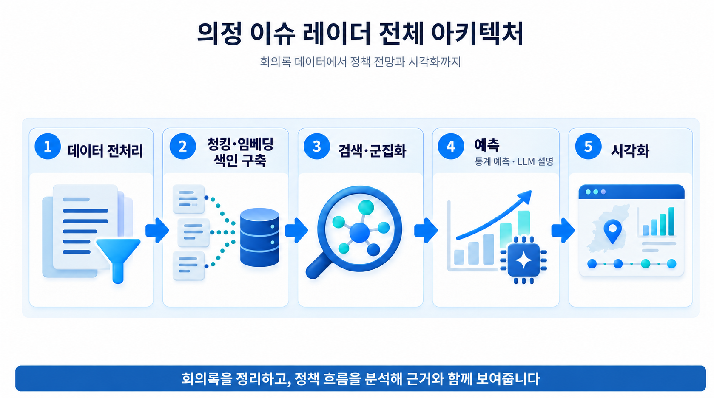
▲ 그림 1은 개발 단계 전체 구조입니다. 아래 6단계는 최종 실행본(노트북 07) 기준입니다.
의회마다 다른 HTML 구조를 로컬 LLM(Qwen2.5-Coder)이 분석해 의회별 추출 규칙을 만들고, 발언 단위 표(TSV)로 정리. 이후 검색용 작은 조각(약 750자)과 답변용 큰 조각(약 2,400자)으로 나눔.
한국어 임베딩 모델(Snowflake Arctic, 1,024차원)로 문장을 숫자 벡터로 바꾸고, PostgreSQL 17 + pgvector(HNSW 인덱스)에 901,358개 저장. GPU로 약 4.1시간 소요.
뜻이 비슷한 문장을 찾는 의미 검색(pgvector)과 단어가 들어간 문장을 찾는 PostgreSQL 전문검색 결과를 순위 기준(RRF, k=60)으로 합침. 개발 단계에서 쓰던 BM25(SQLite FTS5)·BGE 재순위는 최종 실행본에서 빠짐.
의회별 최초 관측 시점과 순서는 이슈 검색어가 들어간 회의록의 의회별 가장 이른 날짜로 계산. 예측에 쓰는 이슈 구성 조각은 검색 상위 10건에서 비슷한 조각을 넓혀 찾은 뒤, 유사도 0.72 이상끼리 Union-Find로 묶어 만듦.
① 논의가 이어질지: 최근 3개월 활동 비율 기반 모델(F1 0.881)
② 몇 건 언급될지: 포아송 회귀(평균 오차 7.12건)
과거로만 학습하는 시간순 검증 10회로 평가.
A.X-4.0-Light가 검색된 회의록과 계산된 분석·예측 값을 받아 답하고, 출처에 [근거 N]·[분석]·[외부]를 붙임. 숫자는 주어진 값을 그대로 옮기고 근거가 부족하면 그렇다고 말하도록 지시함.
데이터 처리 & 검색 구조
205만 발언을 정리하고, "검색은 작게, 답변은 크게" 나눠 쓰는 구조
데이터 전처리 과정
클릭하면 크게 보기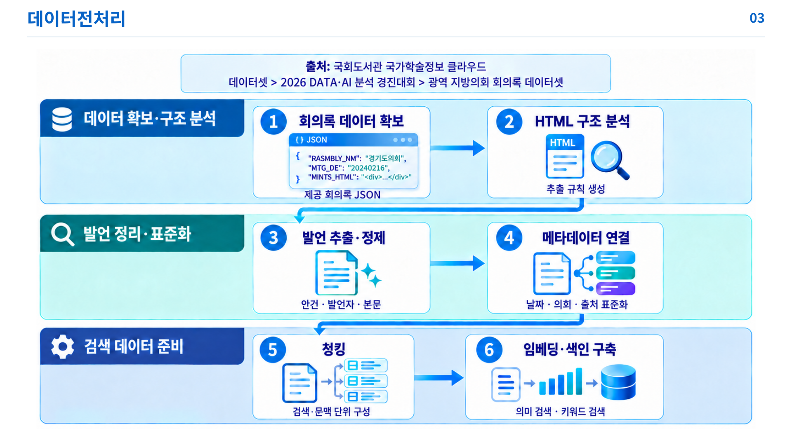
17개 의회의 HTML 구조가 제각각이라 정규식 하나로는 처리할 수 없었습니다.
로컬 LLM(Qwen2.5-Coder)으로 의회별 추출 규칙을 만들어 안건명·발언자·발언 본문만 뽑아 2,057,214행의 표준 데이터를 만들었고,
각 발언에 고유 ID를 붙여 검색·DB·화면이 같은 원본을 가리키도록 했습니다.
정책 분야·키워드 같은 메타데이터는 Kiwi 형태소 분석기와 로컬 LLM(Gemma)으로 추출했습니다.
부모-자식 청킹 (그림 2)
클릭하면 크게 보기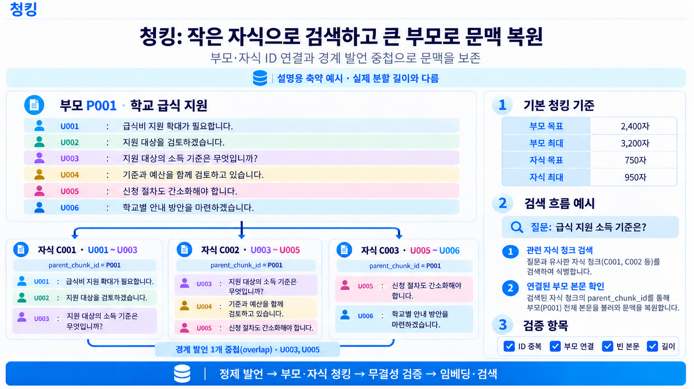
회의록을 길게 자르면 여러 주제가 섞여 검색이 부정확해지고, 짧게 자르면 앞뒤 맥락이 끊깁니다.
그래서 자식 청크(약 750자)로 검색하고, 찾은 조각이 속한 부모 청크(약 2,400자)로 앞뒤 맥락을 보는 구조로 설계했습니다.
자식 청크마다 parent_chunk_id를 저장해 두었습니다.
다만 최종 실행본은 DB 하나만 쓰도록 부모 청크 본문을 DB에 넣지 않았기 때문에, LLM에는 자식 청크를 근거로 넘깁니다.
검색 → 이슈 묶기 (그림 3, 개발 단계 구조)
클릭하면 크게 보기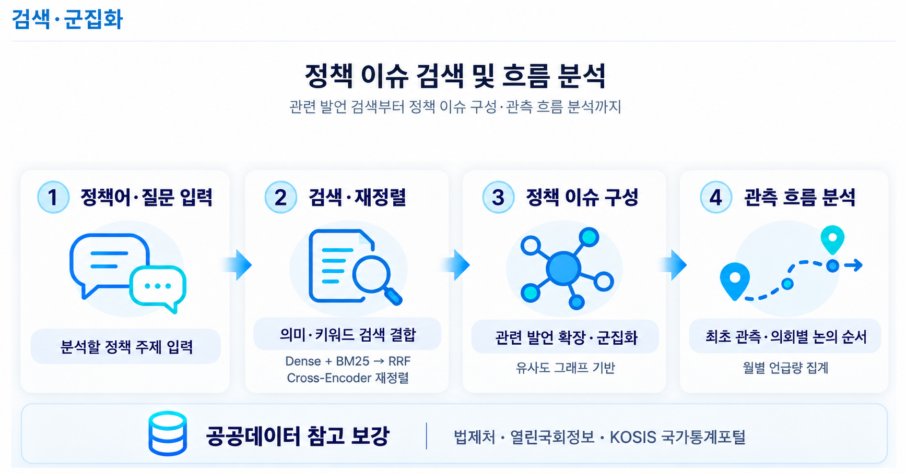
- 의미 검색(pgvector)은 표현이 달라도 뜻이 비슷한 발언을 찾아내지만, 조례명·고유명사처럼 글자가 정확히 맞아야 하는 검색에는 약합니다.
- 그래서 키워드 검색을 함께 돌리고, 두 결과의 점수 대신 순위로 합칩니다(RRF, k=60). 개발 단계에서는 BM25(SQLite FTS5)와 BGE 재순위 모델을 썼고, 최종 실행본은 PostgreSQL 전문검색으로 바꾸고 재순위는 뺐습니다.
- 상위 10건을 출발점으로 비슷한 조각을 500개까지 넓혀 찾은 뒤, 유사도 0.72 이상끼리 묶어 하나의 정책 이슈로 만듭니다. 이 묶음이 다음 달 예측의 재료가 됩니다.
웹 대시보드 구성
Jupyter에서 notebooks/07_council_issue_radar.ipynb를 위에서부터 실행(Run All)하면 마지막 셀이 서버를 띄우고
http://127.0.0.1:8000 링크를 출력합니다. 이 링크를 누르면 대시보드가 열립니다.
정책 선택 → 흐름 확인 → 원문 근거 → 전망·질문
전국 지도 · 의회별 관측 순서 · 월별 추이와 예측 · 근거 인용 로컬 LLM 채팅
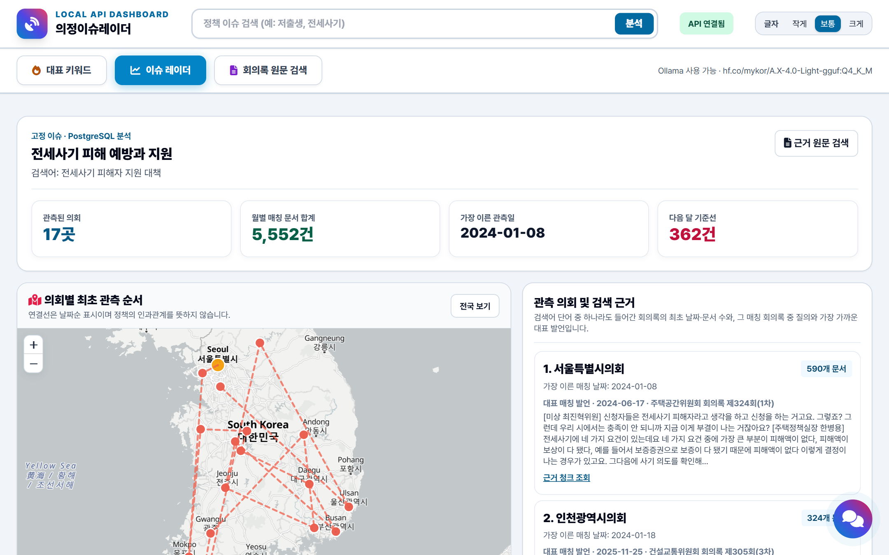
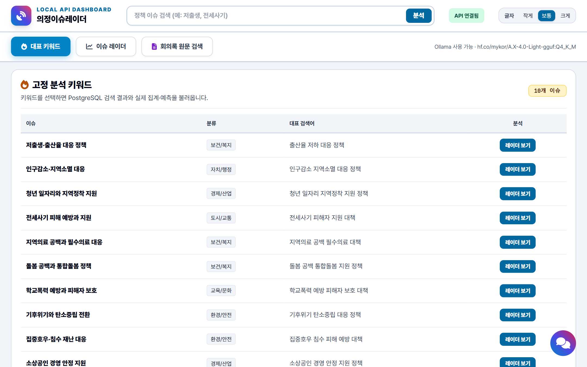
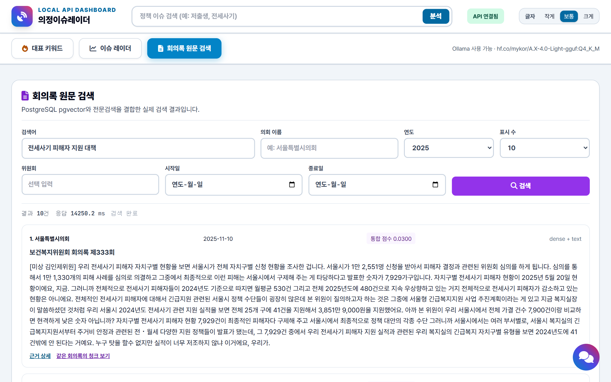
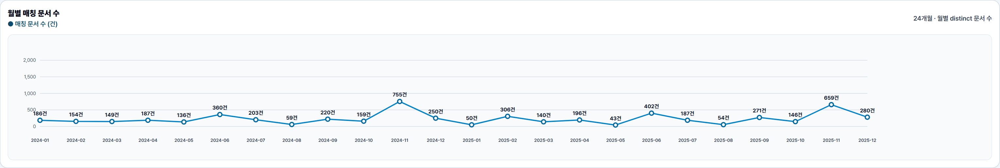
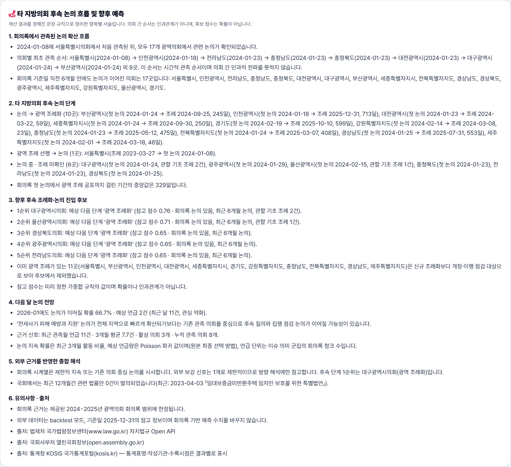
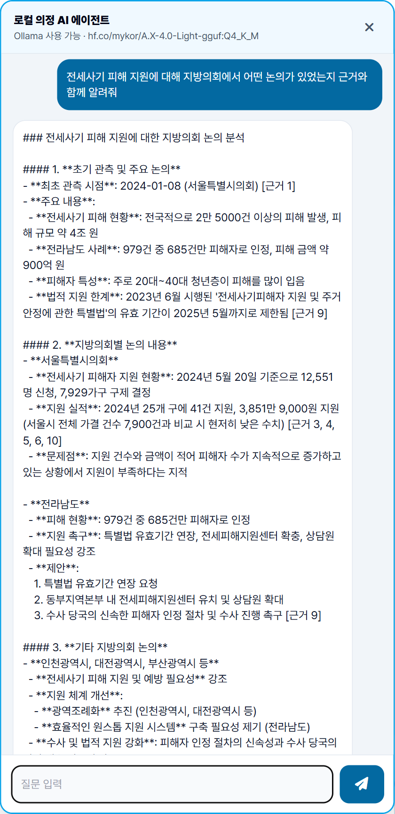
A.X-4.0-Light가 검색된 회의록과, 대표 이슈라면 계산된 분석·예측·공공데이터 값까지 받아 답합니다. 주요 내용마다 [근거 N]을 붙입니다.
답변 아래 근거 버튼을 누르면 원문을 바로 볼 수 있습니다. 이 답변은 약 50초 걸렸습니다.
프로젝트 시행착오 3가지
팀 회의록과 비교 실험 기록에 남은 실제 문제와 해결 과정
새 검색어로 찾으면 최대 3분 → 벡터 DB를 직접 비교해 교체
관련 팀 회의: 2026-10-20(DB 비교 계획), 2026-10-26(지연 문제 공유·PostgreSQL 채택)
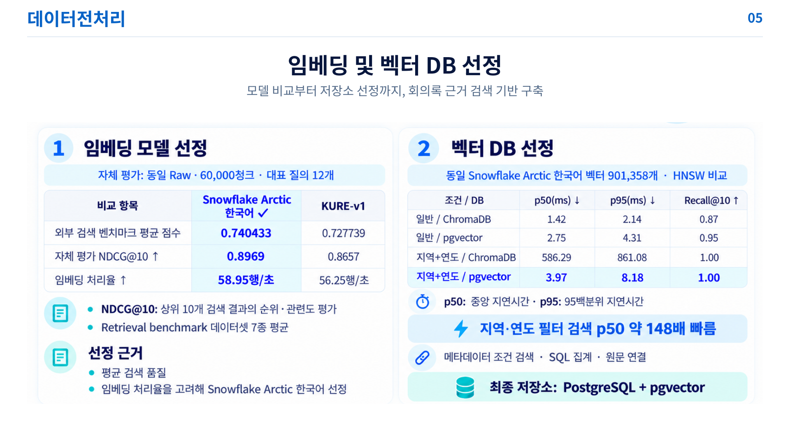
문제
미리 계산해 둔 대표 키워드는 바로 조회됐지만, 새 검색어로 90만 개 조각 전체를 찾으면 검색과 LLM 처리에 150초~3분이 걸리고 가끔 타임아웃이 났습니다. 당시 팀원마다 ChromaDB와 PostgreSQL을 각각 쓰고 있어 어느 쪽으로 갈지도 정해지지 않은 상태였습니다.
확인 방법
같은 Arctic 벡터 901,358개를 두 DB에 똑같이 넣고 같은 질의로 측정했습니다. 조건 없는 검색은 둘 다 1~3ms로 빨랐고 오히려 ChromaDB(1.42ms)가 조금 더 빨랐습니다. 그러나 서비스에 꼭 필요한 '의회+연도' 조건을 붙이면 ChromaDB가 586ms로 크게 느려졌습니다.
해결 & 결과
PostgreSQL 17 + pgvector 0.8.7로 통일했습니다. 조건 검색 중앙값 3.97ms(약 148배), 정확도(Recall@10 1.00)는 그대로였고, 원문·메타데이터·월별 집계를 SQL 하나로 다룰 수 있게 됐습니다. 완성된 DB는 덤프 파일로 만들어 새 환경에서도 약 29분 만에 복원되도록 했습니다.
LLM 메타데이터 추출이 너무 느렸고, 넣어도 검색이 좋아지지 않았다
관련 팀 회의: 2026-10-19(추출 속도 병목), 2026-10-21(작업 우선순위 조정) · 노트북 05 비교 실험
문제
발언마다 정책 분야·키워드·요약을 로컬 LLM으로 뽑았더니 한 줄에 약 6.5초, 16MB 파일 하나에 8~10시간이 걸렸습니다. 전체를 처리하려면 며칠이 필요했고, 전처리에 묶여 전체 파이프라인 연결이 늦어질 위험이 있었습니다.
대응
파일을 팀원 PC에 나눠 퇴근 후 야간 배치로 돌리고 멀티스레드를 적용했습니다. 또 LLM 추출은 샘플(50~100줄)로 먼저 검증하고, 늦어지면 기존 정형 메타데이터로 파이프라인 연결을 먼저 하기로 기준을 정했습니다.
검증 & 결론
"메타데이터를 본문에 붙여 벡터로 만들면 검색이 좋아질 것"이라는 가정을 같은 평가셋으로 확인했더니, 결합 버전(0.8871)이 원문만 쓴 버전(0.8928)보다 오히려 조금 낮았습니다(통계적으로 의미 있는 차이는 아님). 그래서 벡터에는 원문만 쓰고, 메타데이터는 필터·집계용으로 나눠 쓰기로 했습니다.
설명용 LLM 고르기: 빠른 소형 모델은 "모른다"고 하지 못했다
관련: 2026-10-30 팀 회의(LLM 교체 검토) · 노트북 06 한국어 로컬 LLM 6종 비교
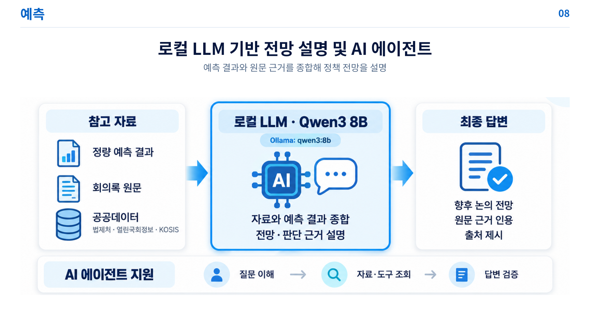
▲ 발표 당시 슬라이드(Qwen3 8B 기준). 이후 비교 실험을 거쳐 최종 모델을 A.X-4.0-Light로 바꿨습니다.
문제
초기에는 Qwen3 8B를 쓰다가 EXAONE 등 국내 모델로 교체를 검토했습니다. 단순히 빠르거나 유명한 모델을 고르면 회의록에 없는 내용을 지어낼 위험이 있어, 기준을 정하고 직접 비교하기로 했습니다.
비교 방법 & 발견
6개 모델에 같은 8개 질문을 던졌습니다. 그중 하나는 회의록에 근거가 없는 미끼 질문입니다. 1~1.5B 소형 모델(HyperCLOVAX-SEED, EXAONE-4.0 1.2B)은 4초대로 가장 빨랐지만 미끼 질문에도 그럴듯한 답을 냈고, EXAONE-4.0 1.2B는 인용 0/8에 생각 과정이 답변에 섞여 나왔습니다.
결정
미끼 질문을 막아낸 모델 중 가장 빠른 A.X-4.0-Light(평균 7.7초, 8/8 문항 인용)를 골랐습니다. 자동 검증 통과는 7/8로 EXAONE-3.5(8/8)보다 한 문항 적었지만, 인용률과 속도를 함께 고려했습니다. 또 숫자는 LLM에 맡기지 않고 통계 모델이 계산한 값만 설명하게 했습니다.
비교 실험으로 확인한 성능
모델·DB를 고를 때마다 같은 조건에서 직접 측정해 결정했습니다
다음 달 예측: 시간순 검증(Rolling Backtest) 결과
클릭하면 크게 보기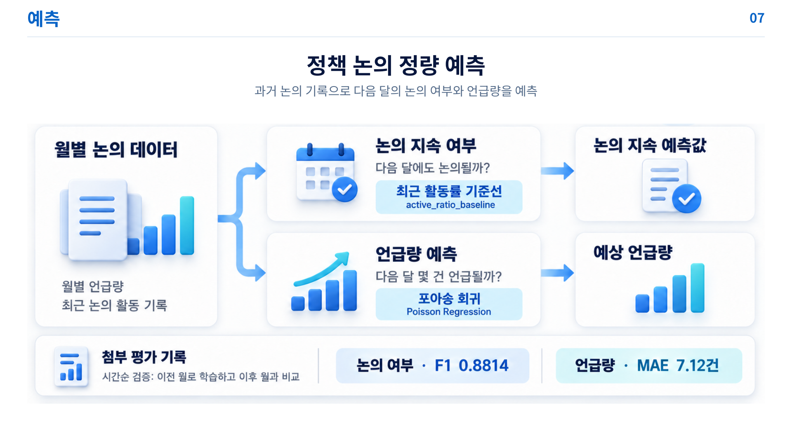
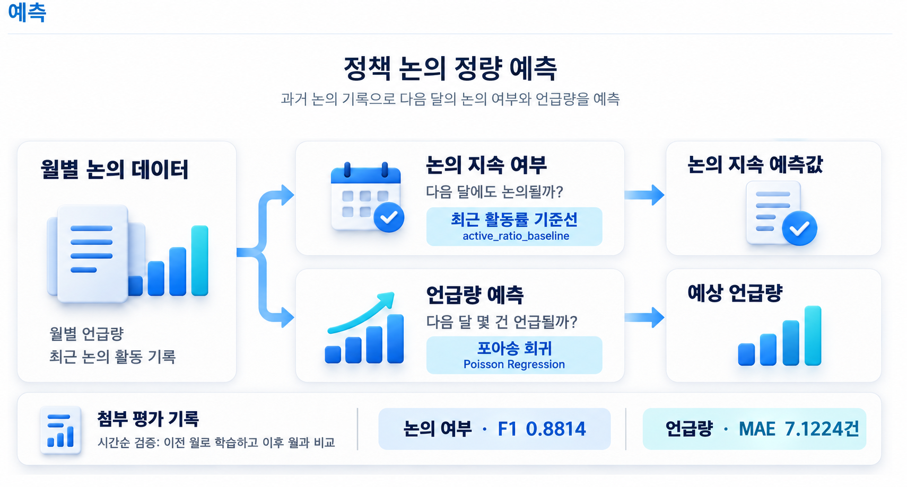
데이터를 무작위로 섞어 검증하면 미래 정보로 과거를 맞히는 셈이 됩니다. 그래서 매번 그 달 이전 데이터로만 학습하고 다음 한 달을 맞히는 방식으로 2025년 3월~12월에 걸쳐 10번 검증했습니다(대표 이슈 10개, 예측 100건). '언급량'은 해당 이슈로 묶인 검색 조각(청크) 수입니다. 대표 이슈 10개 기준의 시제품 평가이므로, 모든 검색어에 같은 성능을 보장하는 수치는 아닙니다.
벡터 DB 검색 시간 (ms, 낮을수록 좋음)
중앙값(p50)조건 없는 검색은 둘 다 빨랐지만, '의회+연도' 조건 검색에서 ChromaDB 586.29ms, pgvector 3.97ms로 차이가 크게 벌어졌습니다. (세로축은 로그 눈금)
다음 달 언급량 예측 오차 (건, 낮을수록 좋음)
10회 시간순 검증지난달 값을 그대로 쓰는 방법보다 포아송 회귀가 평균 오차(MAE)를 10.15 → 7.12건(29.8%↓), 큰 오차에 민감한 RMSE를 13.27 → 10.04건(24.3%↓)으로 줄였습니다. 증가·유지·감소 방향은 76% 맞혔습니다.
임베딩 모델별 검색 정확도 (높을수록 좋음)
6만 청크 · 질의 12개같은 원문·질의·정답으로 비교했을 때 Snowflake Arctic(nDCG@10 0.8969)이 KURE-v1(0.8657)보다 정확했고, 처리 속도도 초당 58.95행으로 더 빨라 최종 선택했습니다.
한국어 로컬 LLM 6종 비교
질문 8개(미끼 1개 포함)| 모델 | 평균 응답 | 인용 문항 | 자동 검증 | 미끼 방어 |
|---|---|---|---|---|
| A.X-4.0-Light (선택) | 7.7초 | 8/8 | 7/8 | O |
| EXAONE-3.5 7.8B | 8.6초 | 7/8 | 8/8 | O |
| Kanana-1.5 8B | 16.0초 | 3/8 | 7/8 | O |
| Tri-7B | 40.2초 | 4/8 | 6/8 | O |
| HyperCLOVAX-SEED 1.5B | 4.2초 | 7/8 | 8/8 | X |
| EXAONE-4.0 1.2B | 4.1초 | 0/8 | 3/8 | X |
미끼 방어 = 회의록에 근거가 없는 질문에 "근거 부족"이라고 답했는지. 자동 검증 = 답변 속 숫자·날짜·의회명이 근거와 일치했는지. (출처: data/llm_compare/report.md)
LLM 추론 벤치마크: NPU(FuriosaAI RNGD) vs GPU(RTX 3060)
서비스의 실제 프롬프트(RAG 답변 = 질문 + 회의록 근거 6건, 질문 해석)로 같은 코드·같은 조건에서 측정했습니다.
Ollama는 요청을 하나씩 처리해 동시 요청이 늘어도 처리량이 그대로이고 대기 시간만 늘었습니다. RNGD는 여러 요청을 묶어 처리해 처리량이 3.2배로 늘었습니다.
근거 6건이 들어가 프롬프트가 2,900~4,200토큰으로 깁니다. 입력이 길수록 GPU는 첫 토큰까지 2초 넘게 걸렸고, RNGD는 가장 긴 프롬프트에서도 0.37초였습니다. 생성 속도 차이(1.9배)보다 첫 토큰 시간 차이가 더 컸습니다.
| 구성 | 생성 tok/s | 첫 토큰 (prefill 포함) |
처리량 (동시 4) |
첫 토큰 (동시 4) |
|---|---|---|---|---|
| RNGD · furiosa-llm · Qwen3-8B FP8 | 100.9 | 0.25초 | 321.9 | 0.08초 |
| RTX 3060 · Ollama · qwen3:8b 4bit | 52.8 | 1.54초 | 53.3 | 14.0초 |
| RTX 3060 · Ollama · qwen3:8b 8bit | 36.0 | 1.46초 | 36.0 | 16.4초 |
- 양쪽 모두 Qwen3 8B, thinking 끔, OpenAI 호환
/v1스트리밍을 같은 측정 코드로 호출 - 시나리오 4개(RAG 답변 3 + 질문 해석 1), 최대 출력 600토큰, 동시성 1은 10회 · 4는 16회
- 입력 토큰 차이 4토큰(대화 템플릿 차이) → 컨텍스트 잘림 없음 확인. 가장 긴 프롬프트가 4,169토큰이라 Ollama 컨텍스트를 기본 4096에서 8192로 올려 측정
- 회의록 근거는 각 머신 안의
127.0.0.1로만 전송
- 같은 프롬프트를 반복하면 서버 캐시 때문에 첫 토큰이 0.03~0.09초로 짧게 나옵니다. 그래서 요청마다 고유 ID를 붙여 캐시를 피한 값(prefill 포함)을 따로 쟀습니다.
- 정밀도(FP8 vs 4/8bit 정수)와 서버 엔진이 함께 다르므로 하드웨어 단독이 아닌 구성 비교입니다. GPU는 8bit로 올리면 오히려 32% 느려졌습니다.
- 서비스 기본 모델은 A.X-4.0-Light이며, 벤치마크는 RNGD에서 쓸 수 있는 Qwen3 8B로 양쪽을 통일했습니다.
출처: team_submission/benchmarks/comparisons/*-rngd-vs-home, *-rngd-vs-home-nocache (compare.json) · 측정 코드: src/benchmark/, scripts/benchmark_llm_backends.py
핵심 코드
발표 자료에 실은 핵심 구현 3가지 (이미지를 클릭하면 크게 볼 수 있습니다)
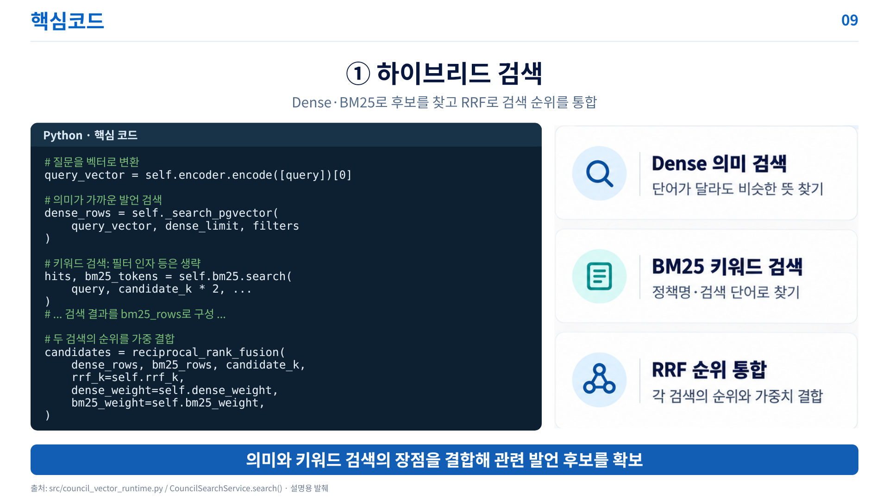
의미 검색과 키워드 검색 결과를 점수가 아닌 순위로 합칩니다(1 / (60 + 순위)를 더함). 슬라이드는 개발 단계 코드(BM25)이고, 최종 실행본은 같은 RRF로 PostgreSQL 전문검색 결과를 합칩니다.
개발: src/council_vector_runtime.py · 최종: src/api/postgres_backend.py
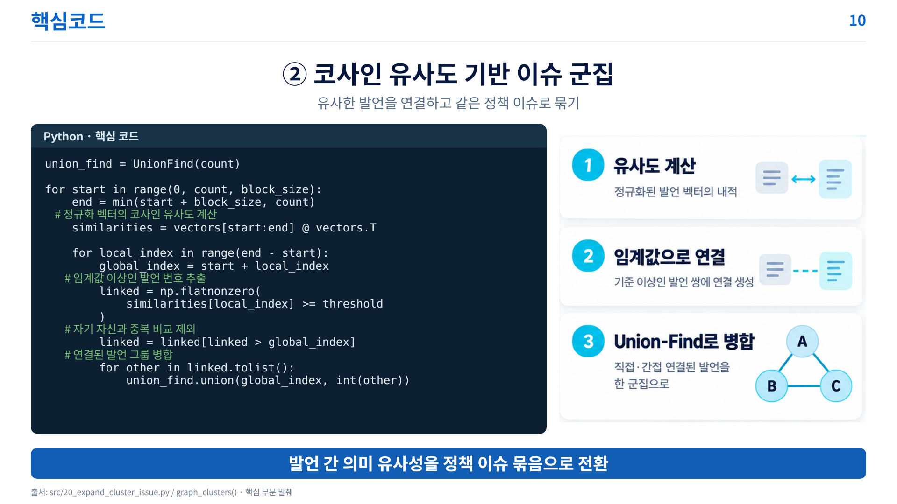
메모리를 아끼려고 벡터를 블록 단위로 곱해 유사도를 구하고, 기준값(기본 0.72) 이상인 발언 쌍을 Union-Find로 하나의 이슈로 묶습니다.
src/20_expand_cluster_issue.py
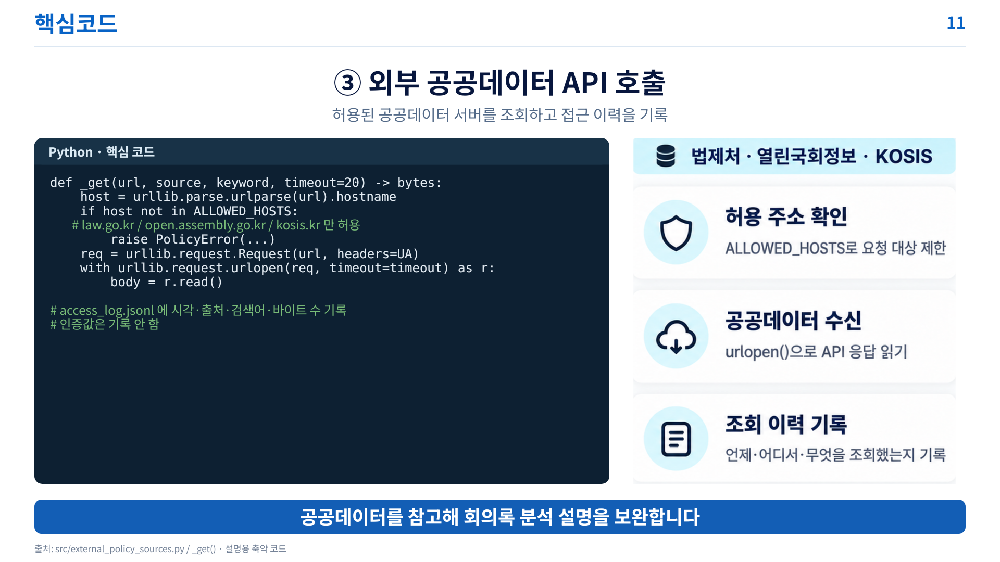
법제처·열린국회정보·KOSIS 3개 주소만 허용하고, 호출 기록(시각·출처·검색어·응답 크기)을 로그로 남깁니다. 회의록 원문과 인증값은 보내거나 기록하지 않습니다.
src/external_policy_sources.py
회의록 속 정책 흐름을, 근거와 함께 보여주는 AI
「의정이슈레이더」는 광역의회 회의록에서 정책 이슈가 처음 나타난 시점과 의회 간 후속 논의 흐름을 찾아내고, 계산은 통계 모델에, 설명은 로컬 LLM에 맡겨 원문 근거가 붙은 예측과 답변을 제공합니다. 모든 AI 모델은 로컬에서 실행되며, 사전 구축 DB 덤프와 노트북 07 하나로 검색부터 대시보드까지 다시 띄울 수 있습니다.